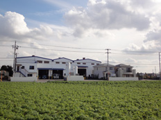
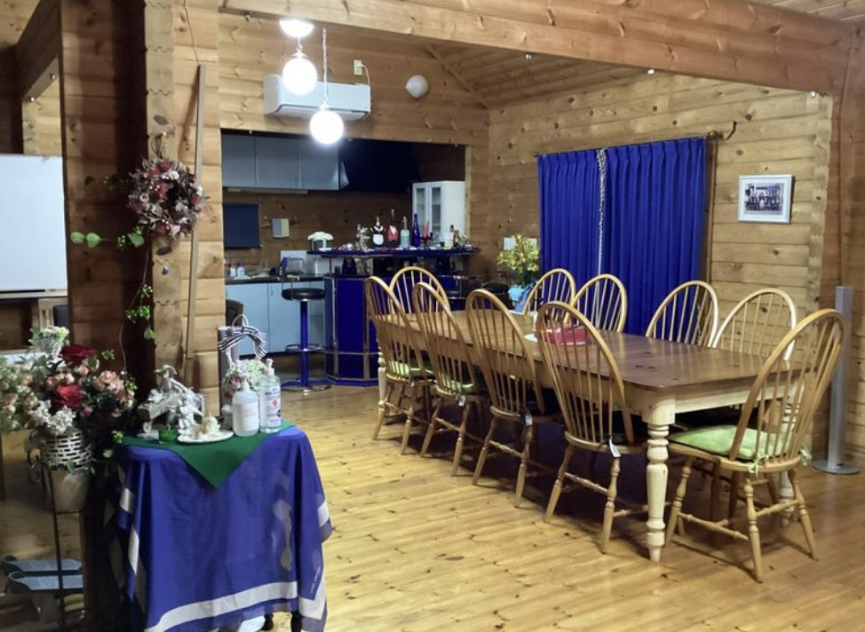
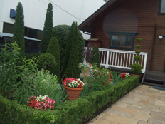

次にこの街をつくるのは、
あなたかもしれない。
「話を聞いてみたい」「工場を見てみたい」だけでも大歓迎です。
043-444-8121「採用ページを見た」とお伝えください（採用担当まで）
TLC RECRUIT 2026
あなたが切り出した一枚が、銀座や六本木のランドマークになる。
千葉県八街市——レーザー切断・加工のTLCで、モノづくりを始めよう。
WHY TLC

スマホケースから建設資材まで。手掛けた製品が都内の有名施設に使われることも珍しくありません。日常の風景に自分の仕事が残ります。

先輩の90％以上が未経験スタート。先輩の隣でイチから学び、クレーン免許（国家資格）も会社の全額負担で取得できます。

年間休日123日・土日祝休み・残業月平均5時間・夜勤転勤なし。昼はログハウスで支給弁当を。高い定着率が働きやすさの証明です。
ONE DAY
1日の予定を共有し、製品の荷造り・梱包からスタート。
10分休憩のあと、レーザー加工機のオペレーションへ。
敷地内のログハウスで、支給されるお弁当を仲間と。
10分休憩をはさみ再開。難しい加工は先輩がすぐフォロー。
残業は月平均5時間。ほぼ定時で、夜の時間は自由に。
VOICES
包丁からレーザーへ。畑違いの転職でしたが、先輩の丁寧な指導で今は大物加工も担当。手に職がつく実感があります。
土日祝休みと残業の少なさで、生活が一変。子どもと過ごす時間が増えたのが何より嬉しいです。
17名の少人数で、聞けばすぐ誰かが教えてくれる距離感。ログハウスでのお昼が毎日の楽しみです。
ENVIRONMENT





FAQ
疑問や不安は、応募前でもお気軽にご相談ください。工場見学だけのご連絡も歓迎です。
※ここはサンプルです。実際の担当者写真・お名前に差し替えます（削除も可能）。
REQUIREMENTS
| 募集職種 | 製造スタッフ（マシンオペレーター）／正社員 ※試用期間3ヶ月（待遇変更なし） |
|---|---|
| 仕事内容 | レーザー加工機など機械を使った素材（鉄・銅・アルミ・木材・アクリル等）の切断・加工、製品の梱包などの工場内作業 |
| 応募資格 | 40歳以下（長期キャリア形成のため）／高卒以上／要普通自動車免許（AT可） 未経験・第二新卒歓迎、学歴不問 |
| 給与 | 月給22万円以上＋諸手当＋賞与年2回（昨年実績：年間2.5ヶ月分） 【月収例】26万円／入社1年目・26歳・未経験、30万円／入社1年目・30歳・未経験 |
| 諸手当 | 通勤・残業・住宅（規定あり）・家族（配偶者・子1人につき月5,000円※規定あり）・技術・役職・資格手当（クレーン免許） |
| 勤務地 | 千葉県八街市朝日391-7（JR「八街駅」より車で約10分） 転勤なし・マイカー通勤OK（駐車場完備） |
| 勤務時間 | 7:45〜17:00（休憩75分） 残業月平均5時間以内（繁忙期でも20時間以内）・夜勤なし |
| 休日・休暇 | 年間休日123日／完全週休2日制（土日）・祝日（会社カレンダーによる）／GW・夏季・年末年始・有給休暇 |
| 福利厚生 | 社会保険完備、退職金制度（勤続3年以上）、資格取得支援（全額会社負担）、昼食弁当支給、制服貸与、定期健康診断 ほか |
「話を聞いてみたい」「工場を見てみたい」だけでも大歓迎です。